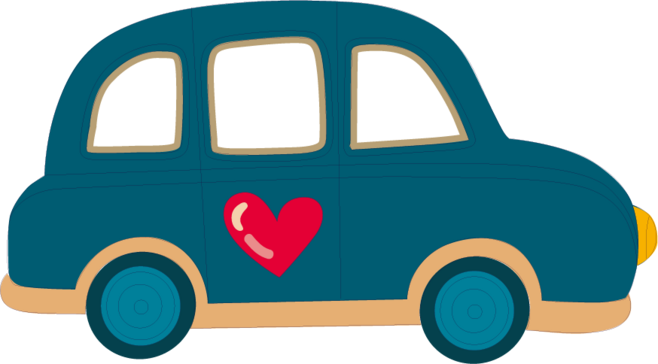

animation-duration(规定完成动画所花费的时间，以秒计)
animation-timing-function(规定动画的速度曲线。)
linear
ease
ease-in
ease-out
ease-in-out
animation-delay(规定在动画开始之前的延迟)
animation-iteration-count(规定动画应该播放的次数)
infinite
animation-direction(规定是否应该轮流反向播放动画)
normal
alternate
Run